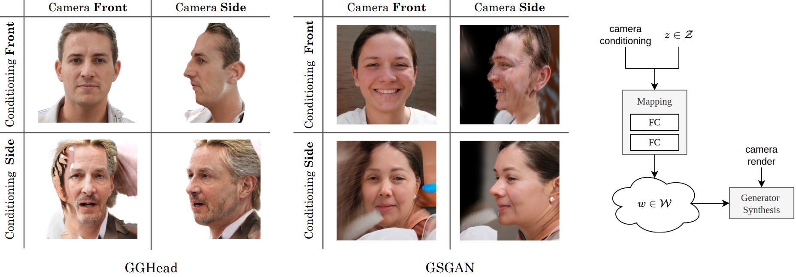

Recently, 3D GANs based on 3D Gaussian splatting have been proposed for high quality synthesis of human heads. However, existing methods stabilize training and enhance rendering quality from steep viewpoints by conditioning the random latent vector on the current camera position. This compromises 3D consistency, as we observe significant identity changes when re-synthesizing the 3D head with each camera shift. Conversely, fixing the camera to a single viewpoint yields high-quality renderings for that perspective but results in poor performance for novel views. Removing view-conditioning typically destabilizes GAN training, often causing the training to collapse. In response to these challenges, we introduce CGS-GAN, a novel 3D Gaussian Splatting GAN framework that enables stable training and high-quality 3D-consistent synthesis of human heads without relying on view-conditioning. To ensure training stability, we introduce a multi-view regularization technique that enhances generator convergence with minimal computational overhead. Additionally, we adapt the conditional loss used in existing 3D Gaussian splatting GANs and propose a generator architecture designed to not only stabilize training but also facilitate efficient rendering and straightforward scaling, enabling output resolutions up to 2048. To evaluate the capabilities of CGS-GAN, we curate a new dataset derived from FFHQ. This dataset enables very high resolutions, focuses on larger portions of the human head, reduces view-dependent artifacts for improved 3D consistency, and excludes images where subjects are obscured by hands or other objects. As a result, our approach achieves very high rendering quality, supported by competitive FID scores, while ensuring consistent 3D scene generation.
Explore the latent space using the web viewer from PlayCanvas paired with SOG Compression.
Example output scenes generated by our proposed CGS-GAN, using the aframe-gaussian-splatting web viewer. Drag and scroll with your mouse. The 3D scenes slightly differ from the original scene, as they were converted from .ply files into compressed .splat files.
|
|
A visual comparison among current 3DGS GANs (GGHead, GSGAN and our proposed method). We condition GGHead and GSGAN on the frontal view, as this provides the overall best results when a 3D consistent scene is required. Quantitative comparisons (FID and consistent FID3D) are found in our paper.
| GSGAN (FFHQ) | GGHead (FFHQ) | Ours (FFHQC) |
In the following figure, we demonstrate the effect of view-conditioning using the prior 3DGS GAN methods GSGAN and GGHead. If the view conditioning aligns with the render camera, we receive very good but inconsistent quality. But if render from a novel view, the quality decreases. As our model eliminates view-conditioning, we no longer observe such effects and instead render in high quality for any given view. To measure this effect quantitatively, we introduce a FID3D metric that measures the FID without telling the generator in advance from which viewpoint the head will be rendered.
We curate a novel dataset from FFHQ that:
The following two videos demonstrate the 3D GAN inversion with our model. Here, we use the respective left image as a target and optimize the random latent vector, so that it resembles this image. In the left video, we show the inversion capabilities using a face shown from a frontal view. And right, we only use the side view as a target. Even in this difficult scenario, where only half of the face is visible, we are still able to obtain a realistic 3D head model.
At one point in the video the face abruptly changes its appearance. This is where we switch from optimizing the latent vector to fine-tuning the weights of the generator to achieve even better results.
Using the Unity Gaussian Splatting Plugin, we are able to import our 3D heads into explicit 3D environments.
@misc{barthel2025cgsgan,
title={CGS-GAN: 3D Consistent Gaussian Splatting GANs for High Resolution Human Head Synthesis},
author={Florian Barthel and Wieland Morgenstern and Paul Hinzer and Anna Hilsmann and Peter Eisert},
year={2025},
eprint={2505.17590},
archivePrefix={arXiv},
primaryClass={cs.CV},
url={https://arxiv.org/abs/2505.17590},
}
Check out our other works here.